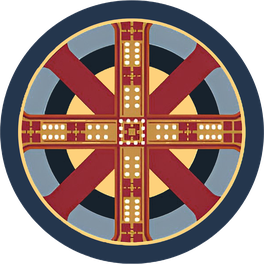

Православен календар
✠
Жития на светиите, четива за деня, пости, Библия, молитвослов и книги — на български, без интернет.
Свали за Android- Стар и нов стил
- Жития и тропари
- Евангелие и Апостол
- Пости
- Библия
- Молитвослов
- Книги и беседи на глас
Как се инсталира
- Натисни „Свали за Android“.
- Отвори сваления файл. Ако телефонът попита — разреши инсталиране от браузъра. Това е нужно само веднъж.
- Готово. Оттук нататък приложението само ще съобщава, когато има нова версия.
Сканирай с телефона